×

Una experiencia clara, cercana y pensada para todos los perfiles de usuario.
El diseño de iMirly se ha desarrollado con un enfoque centrado en el usuario, priorizando la claridad, la accesibilidad y la confianza en la contratación de servicios locales.
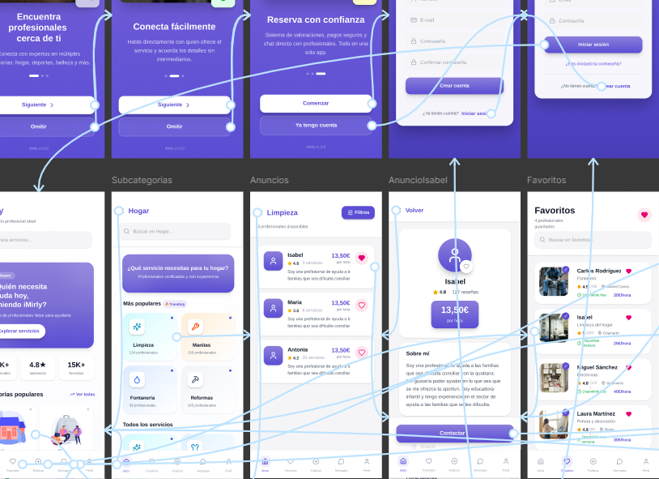
La identidad visual de iMirly busca transmitir cercanía, confianza y simplicidad. Se ha diseñado una interfaz amable, moderna y fácil de entender, evitando la saturación de información y facilitando la navegación.
Espacios en blanco que respiran y reducen la carga cognitiva del usuario
Jerarquía visual que guía al usuario naturalmente hacia la acción
Formas orgánicas y redondeadas que transmiten cercanía y humanidad
Diseño contemporáneo que transmite profesionalidad sin ser frío
La paleta de colores se ha seleccionado para generar una sensación de tranquilidad y confianza, reforzando el carácter local y humano de la plataforma.
Creamos un manual de marca completo que define los estándares visuales de iMirly.
Encuestas de usuario, perfiles de usuario (User Personas), mapas de empatía, journey maps y validación del diseño.
La experiencia de usuario de iMirly está diseñada para que cualquier persona pueda utilizar la aplicación sin dificultad, independientemente de su nivel tecnológico.
Encuestas de usuario, perfiles de usuario (User Personas), mapas de empatía y journey maps.
Hemos realizado entrevistas, elaboración de mapas de empatía y bocetos iniciales que permitieron comprender las necesidades reales de los usuarios objetivo de iMirly.
El público estaba formado por personas que necesitan contratar servicios cotidianos (como limpieza, reparaciones o cuidado de mascotas) y profesionales que desean ofrecerlos.
El objetivo era diseñar una app intuitiva, rápida y de confianza, que permitiera a cualquier usuario encontrar o publicar servicios cercanos en pocos pasos.
Tanto los usuarios que buscan ayuda como los profesionales que ofrecen servicios no disponen de tiempo para perder en llamadas, búsquedas o gestiones.
Las personas quieren resolver su necesidad de forma inmediata, sin procesos largos ni formularios complicados.
Las plataformas tradicionales o intermediarios suelen aplicar comisiones altas o precios poco claros.
Muchos usuarios quieren servicios asequibles, sin sorpresas en el coste final, y los profesionales necesitan ganar lo justo por su trabajo.
Encontrar y ofrecer servicios a veces resulta complicado o limitado. Muchas webs o aplicaciones son poco intuitivas o requieren conocimientos técnicos.
iMirly busca eliminar esas barreras ofreciendo una app sencilla, directa y accesible para todos, incluso para personas con poca experiencia digital.
Documentación completa del proceso de investigación con usuarios reales.
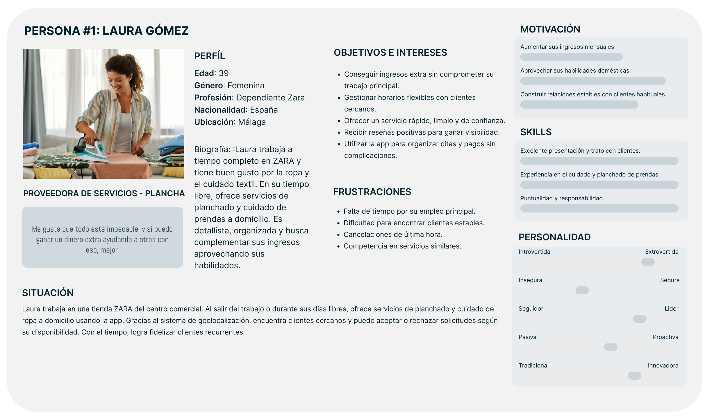
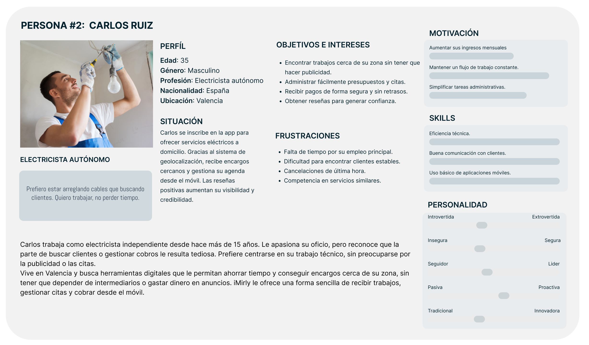
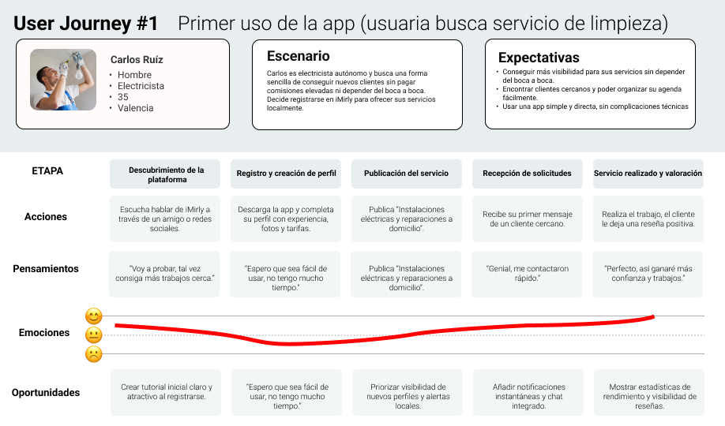
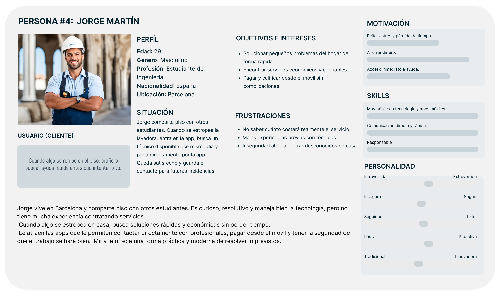
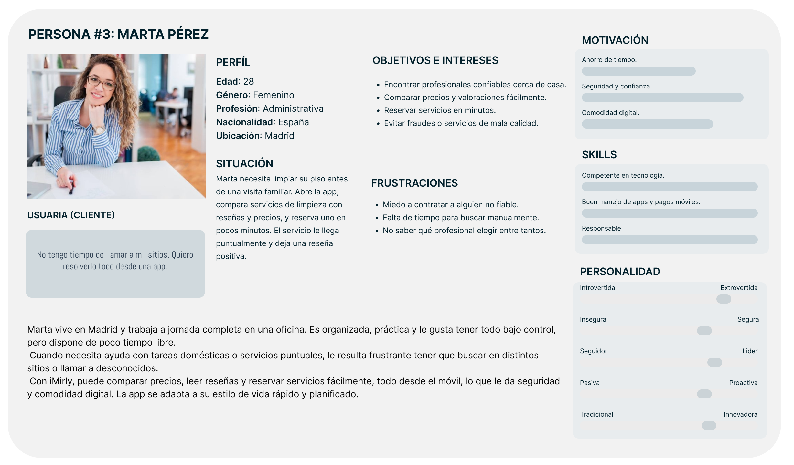
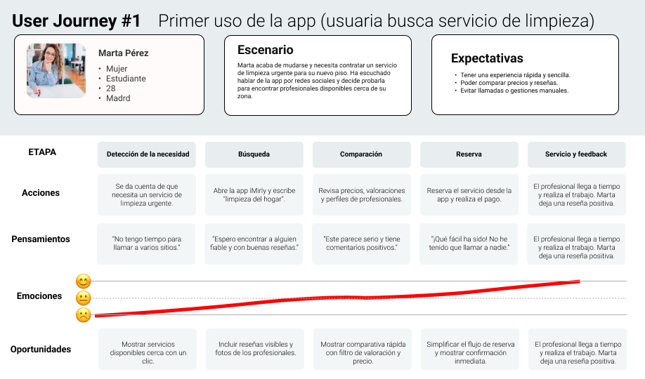
Tras definir la identidad visual, planteamos dos propuestas de interfaz para la pantalla principal. Ambas mantenian la misma estructura funcional, pero diferian en el tratamiento grafico de las categorias.
Iconos vectoriales limpios con paleta de colores suave y mayor enfasis en la tipografia. Un enfoque sobrio y profesional.
Ilustraciones coloridas por categoria con un enfoque visual y cercano que humaniza la experiencia desde el primer contacto.
La encuesta alcanzo a 82 participantes de distintos rangos de edad y perfiles tecnologicos, garantizando una muestra representativa de usuarios reales.
La mayoria eligio la Opcion 2, valorando especialmente la calidez visual y la mayor claridad para identificar servicios de un vistazo.
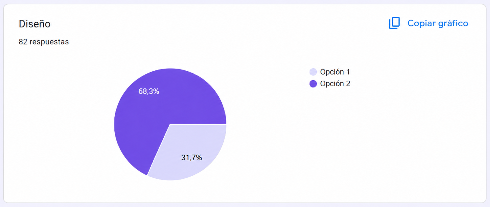
Este resultado reforzo nuestra apuesta por un diseno accesible y cercano. La preferencia mayoritaria confirmo que los usuarios buscan una plataforma que transmita confianza y humanidad desde el primer contacto visual.
Familias sans-serif con buena legibilidad en todos los tamanos
Relacion de contraste que cumple estandares WCAG AA
Tamanos minimos de 48dp para facilitar la interaccion tactil
Interfaz adaptable a diferentes capacidades y experiencias
iMirly se ha disenado pensando en la diversidad de usuarios, buscando una experiencia inclusiva y facil de usar.
Del boceto en papel al prototipo de alta fidelidad. Proceso iterativo de diseno centrado en el usuario.
El proceso de iterar sobre papel nos llevo a encontrar de forma optima lo que nuestros usuarios objetivo necesitaban segun sus necesidades.
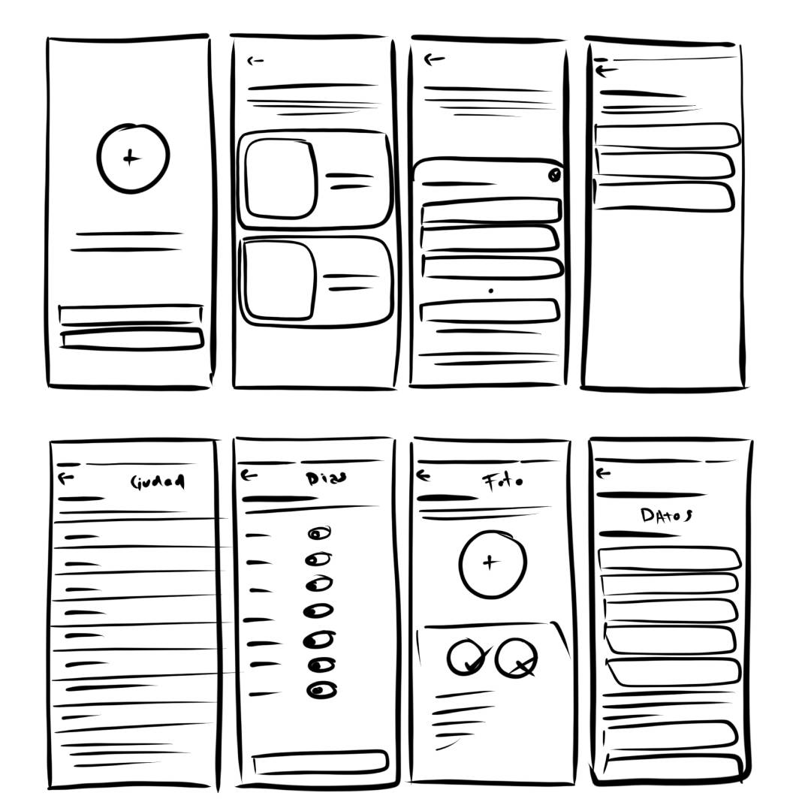
Continuando con el proceso inicial de los esquemas, realizamos el diseno low fi digitalizado basandonos en los resultados de la investigacion.
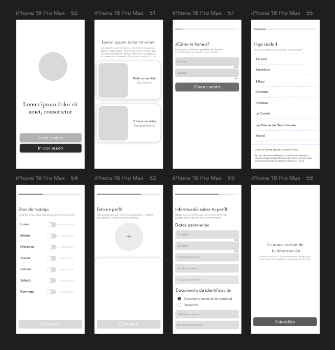
Desarrollamos un prototipo interactivo de baja fidelidad para testear la navegacion y la estructura de la aplicacion con usuarios reales antes de invertir en el diseno visual detallado.
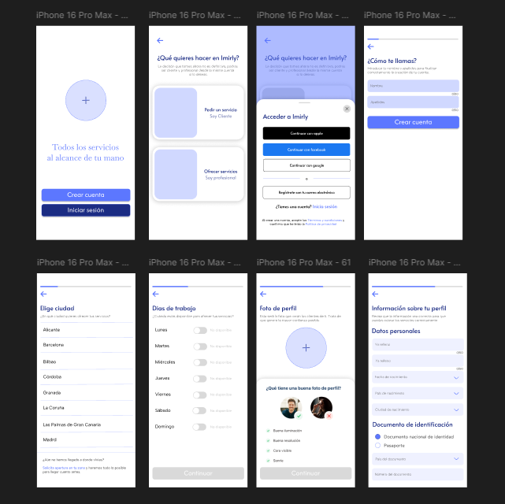
Representacion de la aplicacion iMirly que simula el dispositivo movil y sus pantallas principales. Permite validar la distribucion de elementos, tamanos de botones y flujo de navegacion. Facilita las primeras pruebas con usuarios reales y la deteccion temprana de problemas de usabilidad.
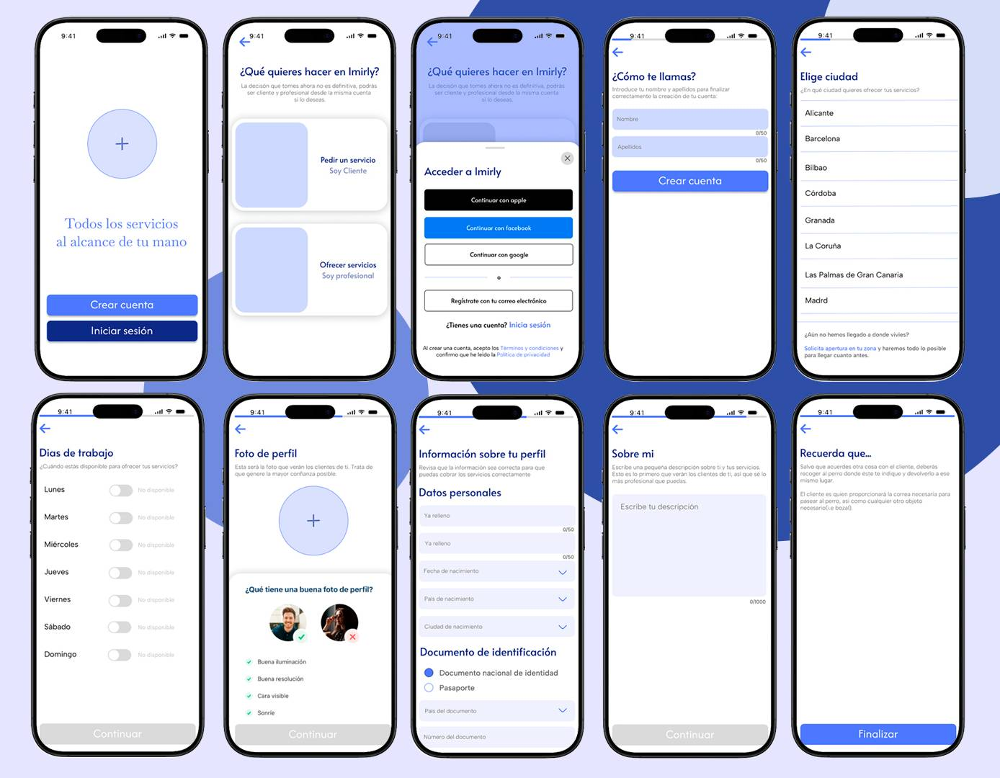
El prototipo de alta fidelidad incorpora el diseno visual completo, interacciones avanzadas y simula la experiencia final de la aplicacion para validar con stakeholders y usuarios.
Explora el prototipo completo de iMirly y navega por todas las pantallas de la aplicacion.
"Un buen diseno no solo se ve bien, tambien se entiende."
El diseno y la experiencia de usuario de iMirly refuerzan la propuesta del proyecto, haciendo que la contratacion de servicios locales sea mas sencilla, clara y humana.
Siguiente seccion: Aplicacion